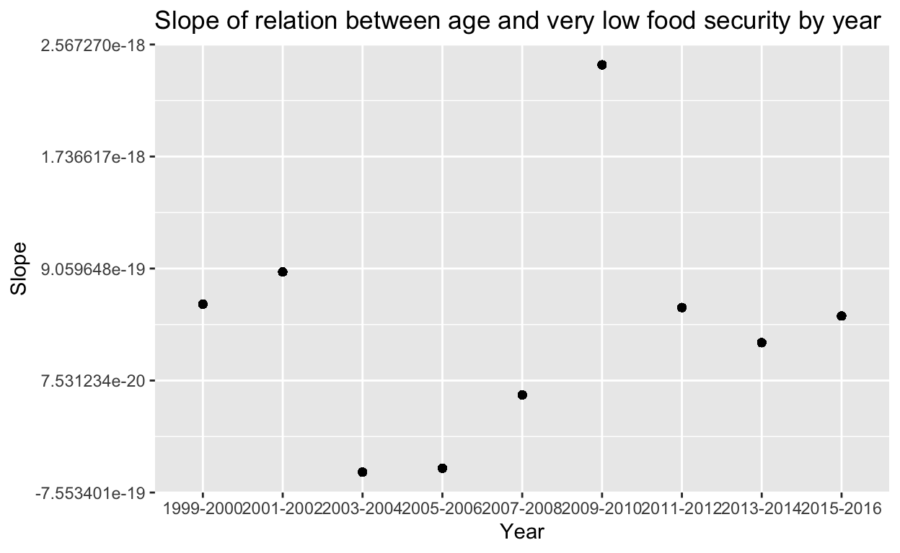

A tutorial for using {purrr} for looping functions.
In this post, we will use the {purrr} package to loop through functions in a data frame. We will look at purrr::map() and purrr:map_dbl(), which can iterate functions over multiple elements of a vector or list. We will also explore walk2 as an alternative to map2.
For this post, we’ll be using data from the National Health and Nutrition Examination Survey (NHANES), which provides longitudinal data on health and nutrition in the United States. We’ll be looking at survey data from 1999 - 2016. To keep it simple, we narrowed the dataset down to the following variables of interest for the current post:
| Variable Code | Type | Description |
|---|---|---|
year |
String | The year that data was collected |
educ_adult |
Integer | Level of education reached |
hh_food_secure |
Integer | Household food security category over last 12 months |
Research has found a negative relation between educational attainment and food insecurity - that is, individuals who have received more education also experience greater food security (Mutisya et al., 2016). However, this relationship could be attributed to a number of factors, including inequitable access to education across SES groups and the inclusion of food literacy education in schooling (American Psychological Association, 2017; Begley, Paynter, Butcher, & Dhaliwal, 2019; Hochschild, 2003; Zhang, 2003). Thus, the relationship between educational attainment and food insecurity may change over time as public policy and education change.
To practice using the purrr:map() family of functions, we’re going to investigate the following research question: How does the relationship between educational attainment and food insecurity change over time?
American Psychological Association. (2017). Education & Socioeconomic status. https://www.apa.org/pi/ses/resources/publications/factsheet-education.pdf
Begley, A., Paynter, E., Butcher, L. M., & Dhaliwal, S. S. (2019). Examining the association between food literacy and food insecurity. Nutrients, 11(2), 445.
Hochschild, J. L. (2003). Social class in public schools. Journal of Social Issues, 59, 821-840.
Mutisya, M., Ngware, M.W., Kabiru, C.W. et al. The effect of education on household food security in two informal urban settlements in Kenya: a longitudinal analysis. Food Sec. 8, 743–756 (2016). https://doi.org/10.1007/s12571-016-0589-3
Zhang, M. (2003). Links between school absenteeism and child poverty. Pastoral Care in Education, 21, 10-17. doi:10.1111/1468-0122.00249
{purrr}We’ll be looking at the variable of educ_adult to represent the level of educational attainment in the general population, and comparing that to a new variable we’ll create to represent the percentage of the total population experiencing food insecurity.
First, we’re going to convert our food insecurity variable hh_food_secure to a factor named security, rename the levels of the factor so they are meaningful, and remove any NAs in our variables of interest.
fi_factor <- fi %>%
mutate(security = as_factor(hh_food_secure)) %>%
mutate(security = case_when(
security == "1" ~ "full food security",
security == "2" ~ "marginal food security",
security == "3" ~ "low food security",
security == "4" ~ "very low food security")) %>%
filter(security != is.na(security),
educ_adult != is.na(educ_adult))
Now we’ll use group_by and the nest function from the {purrr} package to create a nested data frame that groups our data by year and level of food insecurity. To learn more about using the nest function, take a look at this post on parallel iteration.)
fi_grouped <- fi_factor %>%
group_by(year, security) %>%
nest()
Remember, we want to compare educational attainment to the percentage of the population experiencing food insecurity, so we need to create a variable that will tell us the percentage of the population that falls into each food security category at each time point. To do this, we’re going to first count the number of people in each food security category in each year (ct) and the population in each year (pop), and then create a new column called percent_insecurity that has the percentage of people in the population that report a given level of food security.
fi_factor <- fi_factor %>%
add_count(year, name = "pop") %>%
add_count(year, security, name = "ct") %>%
dplyr::select(year, security, educ_adult, pop, ct) %>%
mutate(pop = as.numeric(pop),
ct = as.numeric(ct),
percent_insecurity = ct/pop)
map and map_dbl functionsTo measure the the relationship between educational attainment and the percentage of the population experiencing food insecurity at each time point, we’re going to run a linear regression model for each food security category in each year. To do this, we’re first going to use the group_by and nest functions to create lists of data nested within each value of year and security.
Now that the data are nested, we want to use the lm function to run a linear regression model regressing percent_insecurity on educ_adult. We’re going to use the map function from the {purrr} package to iterate this function across each combination of year and security.
Now, to examine how the relationship changes over time, we want to compare the slopes across years for each food security category. To do this, we’re going to need the slopes. We can extract the slopes using the map_dbl function. Why map_dbl instead of map? Because map will give us the output in a list format, whereas map_dbl will return a vector* that we can save as a column in our data frame.
*By using map_dbl, we’re saving the data as type double. If we wanted to save the data as an integer vector instead, we could use map_int. Alternatively, if we wanted to save the data as a character vector, we could use map_char.
We’re going to want to use our percent_insecurity variable later, so to move it from a nested list to the main data frame, we can unnest the data list and then use select from {dplyr} to save the columns we’re interested in.
pmap and listTo visualize the change in slope of how educational attainment predicts food insecurity across time, we can create a scatterplot for each food security category with an x-axis of year and a y-axis of slope. To create a plot for each food security category, we can use the pmap and list functions to create a new list in our nested data frame with a plot for each value of security. To learn more about using the pmap function, see this post.) I’m using {.x} here in the title to customize each plot title to the food security category it corresponds to.
fi_plots <- fi_lm %>%
group_by(security) %>%
nest() %>%
mutate(plot = pmap(list(security, data), ~{
ggplot(..2, aes(year, slope)) +
geom_point() +
theme(axis.text.x = element_text(angle = 45, hjust = 1)) +
theme_minimal() +
labs(title = glue("Slope of relation between adult education levels and {.x} by year"),
x = "Year",
y = "Slope")
})
)
Here’s an example of one of the plots:
fi_plots$plot[[2]]

walk2 functionNow we can export a plot for each food security category to a new folder. First we’ll use the here function from the {here} package to create a new folder called plots and a folder within that called slope_plots. We’ll then use the same package to create a pathway through which we can create files for each plot that incorporate the name of the food security category they fit in. Using the walk2 function from the {purrr} package, we can save these plots and specify their dimensions. Why use walk2 instead of map2? The walk family of functions are most useful for calling a function for its side effects (like saving files) rather than its return output (like displaying the plots) (see r4ds for more details).
fs::dir_create(here::here("plots", "slope_plots"))
food_security_groups <- str_replace_all(tolower(fi_plots$security), " ", "-")
paths <- here::here("plots", "slope_plots", glue("age_{food_security_groups}.png"))
walk2(paths, fi_plots$plot, ggsave,
width = 9.5,
height = 6.5,
dpi = 500)